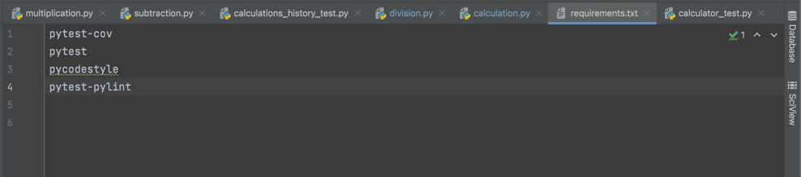

Introduction To Python and Object-Oriented Programing
In the recent years, the boom in tech sectors, have grasped the world. The constant advancement in technologies, have also caused an urgency to create new languages that are more programmer friendly. The two most popular programing languages are python and Java, both of these are object-oriented languages.Object-oriented programing languages, are based on the idea that objects contain data and code. These objects are usually based on classes and are linked to methods, which are functions of what they would do. In this section we will discuss, python, as an object-oriented language and go over the basic terminologies that are related python.
Python, has gained a lot of popularity in the recent years. In most sectors of technology, python is often used. This is because python is a programing language that is relatively accisble to the user, and has instructions that closely resemble normal language syntax like english, so it's extremely user friendly, compared to other programming languages. Python is an amazing programing language for a few things:
- Creating a more compact code, allowing users to follow the coding. Its is actually a great way to learn coding.
- It is amazingly simple and the syntax is easy to follow and read. The layout is straightforward that allows you to do that.
- It is versatile, meaning that it can be used for data visualization, AI, or even web and app development.
 There is also am aspect of python that is useful, and it is the pylint test. This is a test that is done inside pycharm which scans the codes and methods and sees if there are any errors. In order to implement pytest, we need to have the correct requirements downloaded. So in oder to do that we need to have a requirement text file, which has pytest-cov, pytest amd pycodestyle written inside the file. This file is to be run in the terminal created by the docker, using the term "pip3 install -r requirements.txt." This will install the requirements needed for the pytest, however it's important to know that pip3 install is something we only use for the python version 3. After doing this we should be able to run pytest. This will be a much talked about topic inthe the pylint page, but for now let's keep tp our basic understanding of python. In order to really excel in python or any OOP, we still need to understand a few terminologies:
- Factory method : is a type of design method that solves the problem of creating object products without specifying their concrete classes
- Instantiation : is basically instantiating a class or creating a copy of the class that will or could inherit all class variables and methods.
- Object : in programing object is an instance of a class
- Class: is user defined blueprint in which objects are created in. Basically it's an outline for creating an object.
- Namespace: is a system in which there is a specific name/identity for each object and class.
- Constructor: this is a subroutine that is used to create objects within a class.
- Fixtures: these are a type of functions that will run before each test function that it applies to. These are used to feed data to tests.
- Type Hint: is a formal solution to locate and indicate the value type in python code
- Type Cast:this is a type pf method that is used to convert variable data types declared in some data to a different data type to accommodate the codes and functions required by that snippet.
- Unit Test: this is a type of software testing method by which individual units of source code are tested to determine whether they are good for use.
- Static Method: is a method that is bound to the class but not the objects in the class. This method cannot access or modify the state of the class.
- Class Method: is a method that is bound to the class and has access to the class state and can modify the class state. It can also access the parameters which points to the class but not the object instance.
- Facade: this is a structural design pattern, which provides a limited but simplified interface for classes, libraries, or other frameworks.
- Design Pattern: these are usually repeatable solution to a commonly occurring problem in the design of the software.
- Method: these are the functions that are available for the object types, meaning these define what the object, when they are called upon, do.
- Property: these are the features of classes
While there are many other terms that are involved in OOPs, these few terms are important in almost all classes and these are the basics one should understand if one is new to programing in python or other OOP like Java. These terms are found across the OOP languages and many overlap in their functionality. If you understand some of these terms, or have a good handle on python you might find it easier to learn other OOP languages. If you are interested in learning more about python, it's uses and the terminologies, the best resources will be found here.